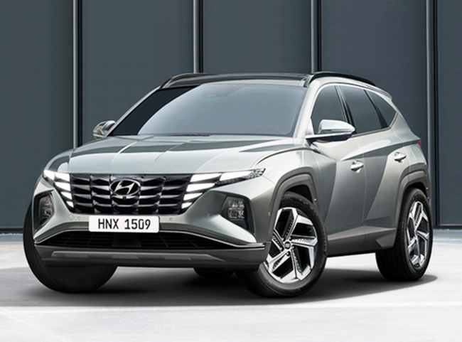
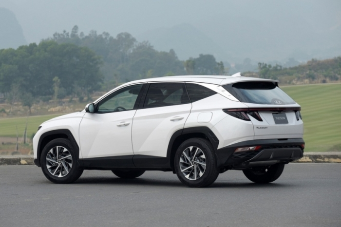

Hyundai đang trong quá trình chuẩn bị cải tiến dòng xe SUV của hãng tại thị trường Ấn Độ trong suốt năm 2022. Theo dự kiến, hãng sẽ trình làng 4 mẫu xe mới, trong đó có một mẫu SUV hoàn toàn mới và ba bản nâng cấp sẽ ra mắt trong thời gian tới.
Mẫu ô tô được nhiều người tiêu dùng mong chờ nhất phải kể đến Hyundai Tucson thế hệ thứ 4 sẽ ra mắt Ấn Độ chỉ vài tháng tới, mẫu SUV này sẽ được nhà sản xuất đưa vào loạt thay đổi mới ấn tượng và đột phá hơn bản tiền nhiệm, ví dụ như thiết kế lưới tản nhiệt đặc biệt kết hợp liền mạch với đèn LED chiếu sáng ban ngày dạng gương chỉ có thể nhìn thấy khi được bật. Không chỉ thế, phần còn lại của xe cũng sẽ có phong cách phóng khoáng và cá tính hơn trước.
Bên trong khoang cabin cũng có thay đổi với thiết kế và cách bố trí độc đáo, hãng sẽ đưa vào bảng điều khiển nhiều lớp, với màn hình thông tin giải trí cảm ứng 10,25 inch ở trung tâm, đi kèm với màn hình lái xe kỹ thuật số 10,25 inch và bảng điều khiển cảm ứng cho hệ thống kiểm soát khí hậu.
Ở thị trường quốc tế, đối thủ Honda CR-V, Mazda CX-5 có hai động cơ xăng, một loại xăng tăng áp 1,6 lít và một đơn vị 2,5 lít; một động cơ diesel, một đơn vị tăng áp 2.0 lít; và một động cơ xăng hybrid 1,6 lít. Đối với Ấn Độ, Hyundai có thể sẽ giữ lại các tùy chọn động cơ xăng và turbo-diesel 2.0 lít của Tucson hiện tại.
Bên cạnh Hyundai Tucson là “người anh em” Kona Electric, mẫu crossover đang khiến dân tình mê mẩn bởi ngoại hình hiện đại, năng động cùng dàn trang bị ngập tràn công nghệ. Đây là mẫu xe chạy hoàn toàn bằng điện đầu tiên của nhà sản xuất ô tô này tại Ấn Độ. Kể từ khi ra mắt ban đầu tại thị trường này vào giữa năm 2019, Kona đã nhận được một bản nâng cấp giữa đời ở nước ngoài.

Đối với phiên bản facelift có kiểu dáng mới lạ với vẻ ngoài sắc nét và hiện đại hơn, phần đầu xe được thiết kế lại, đèn pha kiểu dáng đẹp, cản va tái cấu trúc và đèn hậu nổi bật hơn.